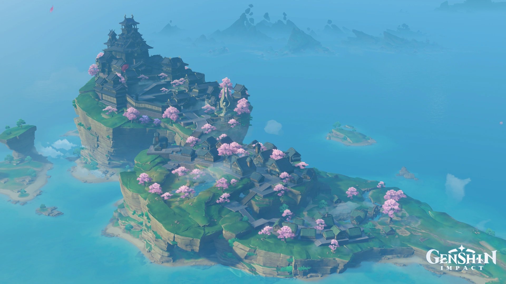

モンド
~風神バルバトスが治める自由の国~

モンドはテイワットの東部に位置する風神バルバトスが治める自由の国である。
モンドの主要産業であるお酒はテイワット中で人気である。風神バルバトスも酒豪家であり、
よく酒場に入り浸っている。
璃月
~岩神モラクスが治める契約の国~

璃月はテイワットの南部に位置する岩神が治める契約の国である。
璃月ではテイワットの通貨であるモラを製造している唯一の国であり、テイワット最大の港があるなど貿易が盛んな国である。
稲妻
~雷神バアルゼブルが治める永遠の国~
稲妻はテイワットの東部に位置する唯一の島国で雷神が治める永遠の国である。
稲妻では永遠を求める国であるため鎖国をしている。内政は天領奉行(公安)・勘定奉行(金融)・社奉行(文化)の三奉行が行っている。
スメール
~草神クラクサナリデビが治める知恵の国~

スメールはテイワットの中部に位置する草神が治める知恵の国である。
スメールにはスメール教令院という研究機関(大学・学院)があり、テイワットの中で最も権威のある研究機関がある。
フォンテーヌ
~水神フォカロルスが治める正義の国~
フォンテーヌはテイワットの西部に位置する水神が治める正義の国である。
フォンテーヌでは裁判が盛んにおこなわれていて、最高審判官という職業も存在する。訴えを拒否し決闘代理人との闘いを選択することもできる。
ナタ
~炎神ムラタが治める戦争の国~

ナタはテイワットに存在する戦争の国である。(位置は不明)
ナタ戦争の国と言われているが詳しいことはまだわかっていない。今年の夏か秋ごろに判明するものと思われる。
スネージナヤ
~氷神???が治める??の国~
フォンテーヌはテイワットに存在する国である。(位置・国のテーマは不明)
スネージナヤにはファデュイという組織が存在し、その欺瞞的で狡猾な策略により、他国から広く恐れられ、軽蔑されている。